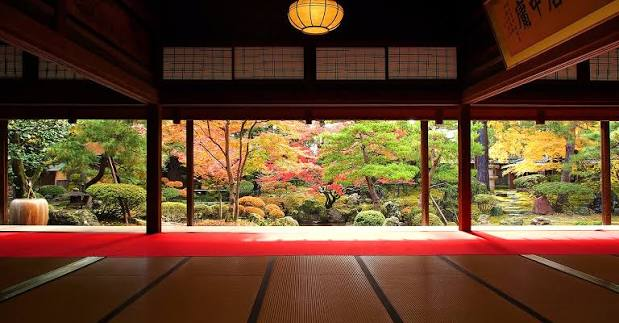

大広間から池泉回遊式庭園を望む圧巻の景観歴史と概要
越後の大地主・伊藤家の旧邸宅をそのまま保存・公開している野外博物館です。 敷地面積約8,800坪という広大なスケールを誇り、明治期における越後豪農の暮らしと美意識を今に伝えています。
建築・見どころ
1. 100畳の大広間と回遊式庭園
柱を極力少なく設計された100畳もの大広間。そこから見渡す回遊式庭園は、四季折々（新緑・紅葉・雪景色）の表情を見せる見事な造形美です。
2. 三角形の茶室「三楽亭」
柱や畳、天井に至るまで「三角形」のモチーフで作られた全国的にも非常に珍しい数寄屋建築です。
 重厚な門構えと日本庭園が広がる敷地内
重厚な門構えと日本庭園が広がる敷地内
研修での学習・着眼点（民営保存の経緯）
戦後の農地改革の際、貴重な歴史財産が散逸することを防ぐため、財団を設けて**「私立博物館第1号」**として発足した経緯を持ちます。 民間の手によって歴史的建築物や美術品を維持管理・観光活用してきた先進事例として学びます。
館内マップや展示情報は公式サイトをご確認ください。
北方文化博物館 公式サイトを開く